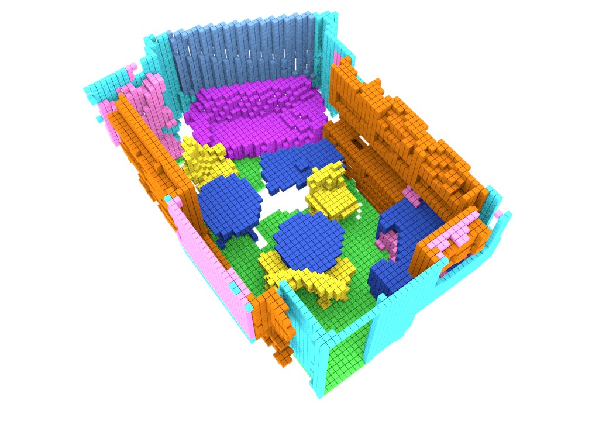
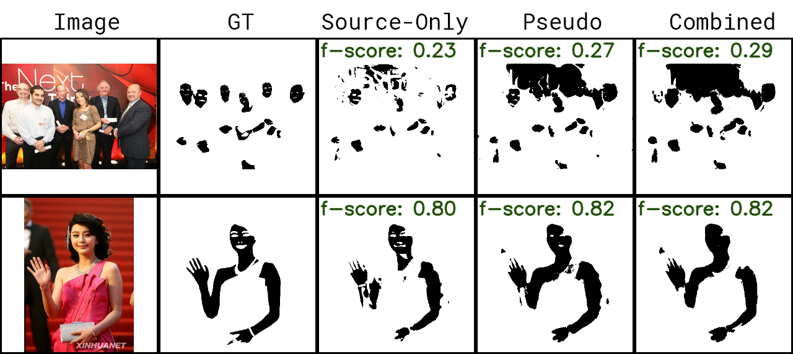

|
Towards Complete 3D Indoor Scene Understanding from a Single Point-of-View
Aloisio Dourado PhD Thesis
|
|
Data Augmented 3D Semantic Scene Completion With 2D Segmentation Priors Aloisio Dourado, Frederico Guth, Teo de Campos WACV 2022 [ WACV link | arXiv preprint | poster | source code] |
|
EdgeNet Semantic Scene Completion from a Single RGB-D Image Aloisio Dourado, Teo de Campos, Hansung Kim and Adrian Hilton ICPR 2020 [ PDF | arXiv preprint | bib | source code | slides | poster | video ] A short version of this paper, published at WPOS 2019. The source code of our "translation" of the original SSCNet from Caffe to Tensor Flow is available at our TF-SSCNet repository. |
|  |
EdgeNet360 Semantic Scene Completion from a Single 360-Degree Image and Depth Map Aloisio Dourado, Hansung Kim, Teo de Campos and Adrian Hilton VISAPP 2020 [ preprint | paper | bib | source code | VISAPP slides | Surrey slides ] |
|
Towards Complete 3D Indoor Scene Understanding from a Single Point-of-View
Aloisio Dourado PhD Qualification
|
|  |
SkinNet Domain Adaptation for Holistic Skin Detection Aloisio Dourado, Frederico Guth, Teo de Campos and Li Weigang [ paper | source code ] |